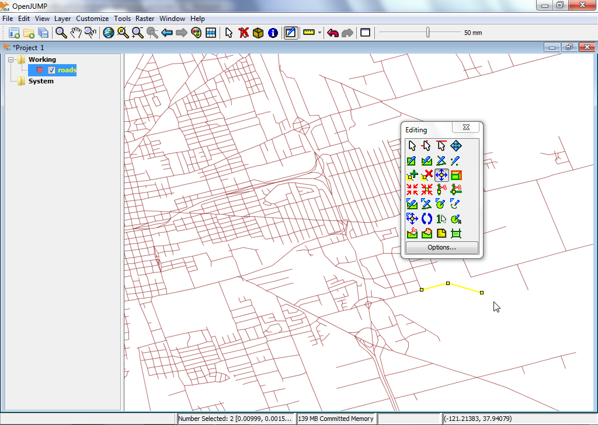

OpenJUMP GIS Snabbstart¶
OpenJUMP är ett GIS-program för skrivbordet som gör det enkelt att visa och redigera GIS-data i vektorformat. PLUS-utgåvan stöder också analys av rasterdata.
Innehåll
Starta OpenJUMP¶
Från skrivbordet väljer du .
OpenJUMP:s användargränssnitt har fyra (4) grundläggande komponenter.
[1] Den första är ett menyfält på översta nivån för åtkomst till de flesta funktioner.
[2] Det andra är ett huvudverktygsfält som sitter precis under menyfältet. Knapparna ger tillgång till de viktigaste visnings- och navigeringsfunktionerna.
[3] Den tredje är en trädvy till vänster som visar lagerlistan för det aktiva projektet.
[4] Den fjärde är kartvyn. Detta är den faktiska kartan där en grafisk representation av de spatiala data som finns i varje lager visas.
Slutligen finns det ett informationsfält längst ned som visar muspekarens koordinater, bearbetningsrapporter och minnesanvändning. Ett projektfönster innehåller en lagerlista och en lagervy. Varje instans av OpenJUMP kan innehålla flera projekt. I den här snabbstarten kommer vi bara att arbeta med ett enda fönster.

Öppna en ESRI-shapefil¶
På menyraden på översta nivån i OpenJUMP väljer du . Du får då upp en dialogruta där du kan öppna filer som innehåller geospatiala data.
Sök efter en ESRI-shapefil. Leta efter en fil med tillägget .shp (t.ex. på LiveDVD:n under /home/user/data/natural_earth2/ne_10m_admin_0_countries.shp).
Välj filen och klicka på knappen Finish i dialogrutan. Efter en liten stund kommer du att kunna se data från din shapefil i kartvyn. Du kommer också att se ett nytt lager som skapats för dina data i lagerlistan. Lagrets namn kommer att överensstämma med shapefilens namn.
{kind=link}
Tips
Ett annat snabbare alternativ är att direkt dra och släppa din shapefil i lagervyn.
Styla ett lager¶
Högerklicka på lagrets namn i lagerlistan. Då visas en popup-meny.
Välj att . Dialogrutan Change Styles har fem (5) flikar där du kan ändra hur lagret visas i kartvyn. Detta inkluderar att ändra streckfärg, fyllningsfärg, linjestil och linjetjocklek, transparens, lägga till etiketter och bestämma vid vilken högsta och lägsta skala lagret ska visas.


Redigera geometrier för objekt i ett lager¶
Högerklicka på lagrets namn i lagerlistan. Då visas en popup-meny.
Klicka på menyposten ”Editable” så att en bockmarkering visas. Då öppnas ett nytt flytande verktygsfält över kartvyn på höger sida. Detta verktygsfält har en uppsättning knappar som du kan använda för att redigera geometrin för en geografisk funktion.


Låt oss prova en snabb redigering. Först måste vi välja en geometri och sedan flytta en punkt i geometrin. För att göra det klickar vi först på knappen som visar en muspekare i redigeringsverktygsfältet (knappen längst upp till vänster).
Aktivera den och klicka på en enskild funktion i kartvyn för att välja den. Om markeringen fungerade bör objektets linjefärg ändras till gult och små gula fyrkanter visas vid varje vinkelpunkt (vertex) i objektets geometri.

Klicka sedan på knappen som visar ett blått hårkors med en gul fyrkant i mitten, Move Vertex Tool (om du sveper över knapparna får du en knappbeskrivning). Du bör nu se att muspekaren ändras till ett litet svart hårkors när du flyttar den över kartvyn.

Prova att använda detta för att flytta en av hörnen/punkterna i den geometri du valde tidigare genom att klicka på ett av hörnen och dra det (håll musknappen intryckt).

{kind=link}
Hur vill du gå vidare?¶
Detta är bara det första steget på vägen till att använda OpenJUMP. Det finns mycket mer material kvar för dig att upptäcka.
Du kan ladda ner handledning för OpenJUMP här: https://sourceforge.net/projects/jump-pilot/files/Documentation/
Du kan läsa OpenJUMP-wikin här: http://ojwiki.soldin.de/index.php?title=Main_Page
Du kan få snabb hjälp på e-postlistan för OpenJUMP-användare: https://groups.google.com/forum/#!forum/openjump-users
Den senaste versionen av OpenJUMP finns här: https://sourceforge.net/projects/jump-pilot/files/OpenJUMP/